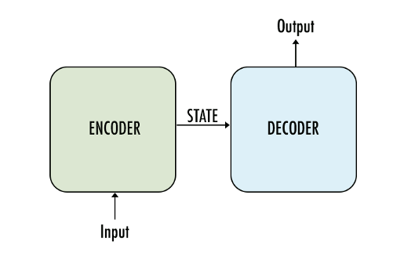

Most Large Language Models use the Transformer architecture.which is designed for sequence-to-sequence tasks such as machine translation. With encoder and decoder stacks, residual connections and positional encoding, the Transformer enables complex processing of sequences and has achieved impressive results in natural language processing.

Embeddings: Encoding Words and Context
Words are converted into vectors called embeddings. These vectors capture the correct
Meaning of words and their context.
Self-attention mechanism: processing context
The cornel of the Transformer model is the self-attention mechanism. This makes it possible
Model to focus on different parts of the input sequence and better understand the context
Pre-training on large data sets
The model is first pre-trained on a huge data set consisting of texts.The model is first pre-trained on a huge data set consisting of texts. It learns to understand patterns and structures in the language without being specifically trained for a particular task.
Adaptation to specific tasks:
After training, the model is fine-tuned for specific tasks. This can include adapting to specific text types, translations, or other tasks.
Areas of application: Diverse tasks
Large Language Models can be used for various tasks such as text generation, translation,
Question and answer systems, analysis and more can be used.
Contextual understanding: Learning from long-term dependencies
Through the self-attention mechanism, these models can also detect long-term dependencies
Understand context, which helps them better respond to complex requests.